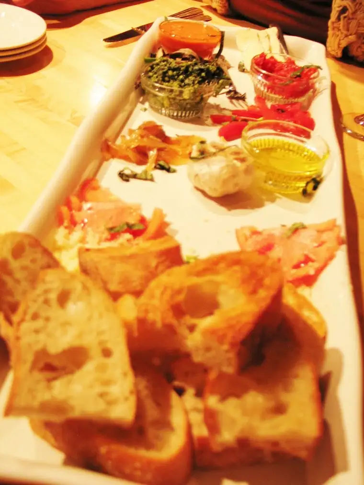
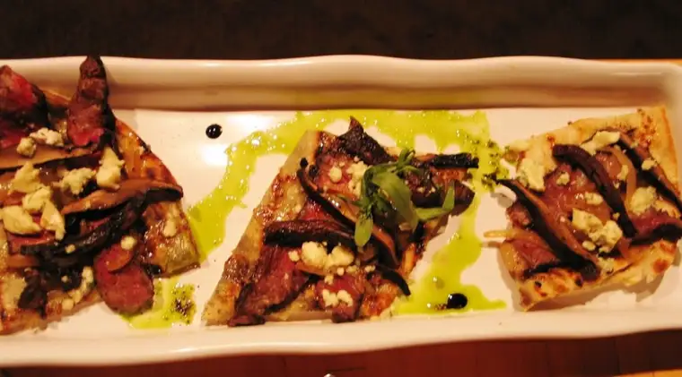

My friend Mary and I have started a tradition of using some of the gracious down-time occupying space between Christmas and New Year’s for a mini-reunion. Since she makes her way to Fargo more than I can get to her Minnesota town, the kids and I went there this time around.
We had a mere 24 hours but big plans were underway for the first evening. Remember Krista, the publicist I had here as a guest not very long ago? It was our good fortune that she was able to meet us for dinner at our favorite place in Baxter — Prairie Bay.

This is the same restaurant where I met Krista for the first time, though only in passing, a year ago. This time, the three of us settled in for a cozy meal.
{kind=link}
Something happens when a trio of literary-minded ladies get together. It has to do with the number three I think (there’s a beautiful dynamic about three) as well as the simple fact that we’re cut from a similar cloth. None of us sees life in a straight-forward way, and it made for a delightful, zany even, sort of evening.
Even our waiter, Brandon, began to relax the further into the night we went, eventually succumbing to the night’s tempo. In his best French accent, he apologized for having run out of fresh mozzarella for the bruchetta (a to-die-for addition at PB), but offered brie in its stead. He redeemed himself fully later by throwing in a free dessert.
 |
| Bruchetta without the traditional mozzarella |
{kind=link}
Rather than ordering individuals meals, we shared three different appetizers and a Caesar salad (it was so fresh you could taste a hint of anchovy).
 |
| Steak and portobello mushroom flatbread |
{kind=link}
And then we got down to it; to the business of what it means to be a creative woman in today’s world, and how we might best utilize our skills and even bring them together in a life-giving way. Among our list of topics was coming up with our individual “Word of the Year.” Mary started me on the “One Word” concept last year, and our time together gave me a chance to zero in on what my new word will be. Are you ready? (Drum roll please….)
{kind=link}
Yes, I’m ready! I’m vigilantly watching for the signs of what God wills for me in 2012, and when the signs are abundantly clear, I will not hesitate. I’ll be ready. And that’s a great feeling! Last year’s word was “pursue” and I feel that I wore it well. 2011 pursue seems to have led nicely into 2012 ready.
We also, as a trio, came up with a collective “One Theme” to have in our sights as we charge into the New Year: “This is Our Time.” Together, we’ve helped bring 13 children into the world. This is no small task. We are proud of our families, but we have more skills and talents to bring forth as well, and we’re looking forward to seeing how far we’ll get with that in 2012.
During the whole of our meal, a guitar strummed in the background. Was there any question that at some point we would make our way to his corner and exchange thoughts on the local art scene and other related topics? Jim (Olsen’s the last name) was a good sport about it all. Apparently he plays frequently in the area, so don’t miss looking up his gigs if you’re ever near Baxter-Brainerd.
{kind=link}
Finally, for some odd reason, even numbers have always appealed to me more, so I’m definitely approaching 2012 with open arms and a ready heart.
{kind=link}
Q4U: How are you defining now how you will approach what is to come? What is your “one word” for 2012?